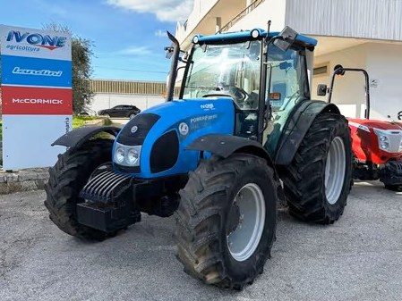

Landini Powerfarm 90

Landini Powerfarm 90 – це класичний універсальний трактор італійського виробництва, який здобув репутацію «невтомного працівника» завдяки своїй простій механічній конструкції та високій надійності. Машина оснащена перевіреним 4-циліндровим двигуном Perkins. Відсутність складної електроніки робить цей трактор ідеальним для господарств, де цінується легкість в обслуговуванні та ремонтопридатність.
Модель вирізняється своєю компактністю та високою маневреністю, що робить її незамінною для роботи в садах, на тваринницьких фермах та для міжрядного обробітку. Трактор зазвичай комплектується механічною трансмісією Speed Four та надійним валом відбору потужності. Кабіна Total View з великою площею скління та ергономічним розташуванням важелів забезпечує оператору чудову оглядовість і комфорт, а можливість встановлення повнопривідного моста з кутом повороту 55° гарантує відмінну прохідність.
| Параметр | Значення |
|---|---|
| Клас тяги | 1.4 |
| Тип ходової частини | колісний |
| Колісна формула | 4х4 (повний привід) |
| Тип рами | жорстка конструкція |
| Основне призначення | універсально-просапні роботи, тваринництво, транспорт, робота в садах |
| Параметр | Значення |
|---|---|
| Модель | Perkins 1104D-44T (Tier 3) |
| Тип двигуна | 4-циліндровий, дизельний, з турбонаддувом |
| Спосіб охолодження | рідинне |
| Розташування циліндрів | рядне, вертикальне |
| Робочий об’єм | 4,4 л (4400 см³) |
| Номінальна потужність | 61,0 кВт (83,0 к.с.) |
| Максимальний крутний момент | 352 Н·м (при 1400 об/хв) |
| Номінальні оберти | 2200 об/хв |
| Очищення вихлопних газів | внутрішня рециркуляція (без AdBlue) |
| Питома витрата (оптимальна) | 220 г/кВт·год |
| Параметр | Значення |
|---|---|
| Кількість передач | 12 вперед / 12 назад (опція з ходозменшувачем — 24/12) |
| Діапазон швидкості вперед | 1,5 – 40,0 км/год |
| Діапазон швидкості назад | 1,5 – 40,0 км/год |
| Тип зчеплення | сухе, дводискове (керамічне), незалежне управління |
| Реверс | механічний синхронізований |
| Вал відбору потужності (ВВП) | 540 / 1000 об/хв (або 540 / 540E) |
| Діапазон | Передача | Передаточне число (iΣ) | Швидкість (Vt), км/год | Тягове зусилля (Pmax), кН |
|---|---|---|---|---|
| I (Low) Низький | 1 | 410,2 | 1,51 | 30,5 |
| 2 | 278,4 | 2,22 | 28,8 | |
| 3 | 198,6 | 3,11 | 24,5 | |
| 4 | 139,1 | 4,45 | 19,2 | |
| II (Medium) Середній | 1 | 114,2 | 5,42 | 16,8 |
| 2 | 77,8 | 7,95 | 11,5 | |
| 3 | 55,6 | 11,12 | 8,2 | |
| 4 | 38,9 | 15,90 | 5,8 | |
| III (High) Високий | 1 | 45,4 | 13,63 | 6,5 |
| 2 | 30,9 | 20,01 | 4,2 | |
| 3 | 22,1 | 28,01 | 3,1 | |
| 4 | 15,5 | 40,05 | 2,2 |
| Параметр | Значення |
|---|---|
| Тип коліс | пневматичні шини |
| Шини передні (стандарт) | 12.4 R24 |
| Шини задні (стандарт) | 16.9 R30 (або 13.6 R38) |
| Радіус ведучого колеса (заднього) | 0,740 м (Rw) |
| Блокування диференціала | механічне / електрогідравлічне (залежно від версії) |
| Кліренс (дорожній просвіт) | 425 мм |
| Передній міст | посилений, з кутом повороту 55° |
| Режим роботи | Витрата, л/год |
|---|---|
| Важкі польові роботи (оранка на середніх ґрунтах) | 10,8 – 12,8 л/год |
| Середні польові роботи (культивація, посів) | 7,2 – 9,5 л/год |
| Легкі роботи (внесення добрив, обприскування) | 5,5 – 7,0 л/год |
| Транспортні роботи (переїзди з причепом) | 6,2 – 8,0 л/год |
| Холостий хід (зупинки, прогрів) | 0,8 – 1,1 л/год |
| Параметр | Значення |
|---|---|
| Експлуатаційна (робоча) вага | 3350 – 3500 кг |
| Максимально допустима вага | 5250 кг |
| Довжина / Ширина / Висота | 4130 / 2000 / 2520 мм |
| Колісна база | 2230 мм |
| Об’єм паливного баку | 102 л |
| Параметр | Значення |
|---|---|
| Гідравлічна система | шестеренний насос, 52,3 л/хв (навіска) + 29,9 л/хв (кермо) |
| Вантажопідйомність навіски | 3700 кг (з двома допоміжними циліндрами) |
| Максимальний тиск гідросистеми | 18,0 МПа |
| Кабіна | "Total View" з оглядом 360°, кондиціонер (опція) |
| Особливості | Повністю механічне управління робить трактор незалежним від складних електронних систем, що критично для віддалених регіонів. Передній міст має інтегровану систему гальмування на всі чотири колеса. |